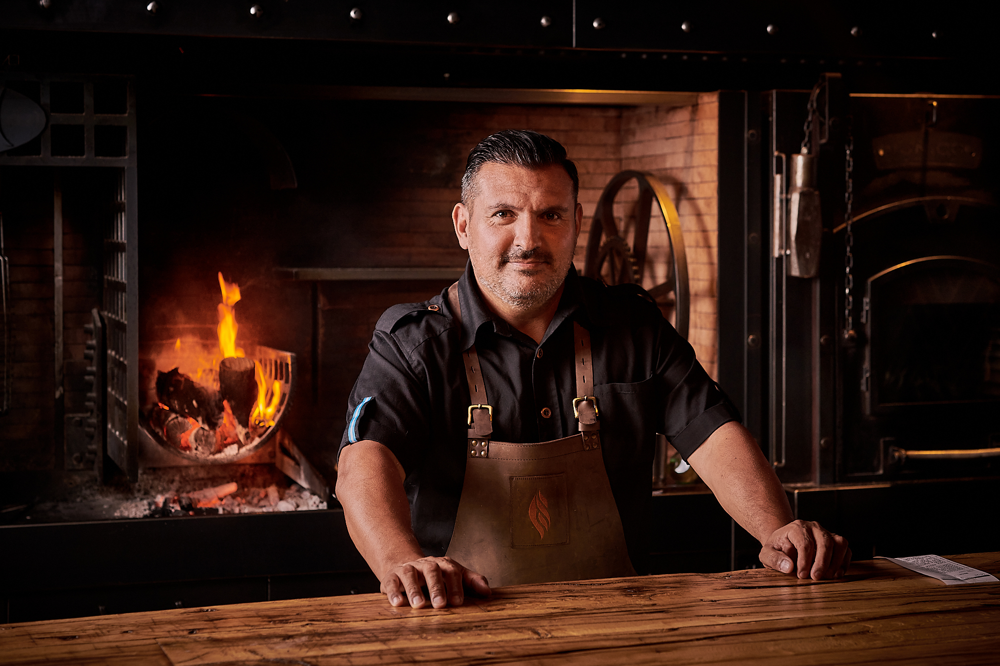

SOMOS MENÚ, SOMOS AMBIENTE, SOMOS SERVICIO
El Asador es una casa de carnes que respeta la tradición y la escencia de la familia argentina, rindiendo un orgulloso tributo a la cultura culinariadel Río de la Plata. Todo el recorrido que vivencian las personas desde que llegan hasta que se van, está pensado para despertar sus sentidos, donde los aromas y sabores del lugar les hacen vivir una experiencia gastronómica única e inigualable
Javier Brichetto
Cocinero, dueño y fundador, se animó a soñar con El Asador 10 años atrás y hacerlo realidad. Su amor por la gastronomía venció el mandato familiar que lo destinaba a ser médico. Decidió crear un nuevo concepto en parrilla, con la carne Argentina como su producto central y una particular forma de presentar sus guarniciones y su carta de postres.
